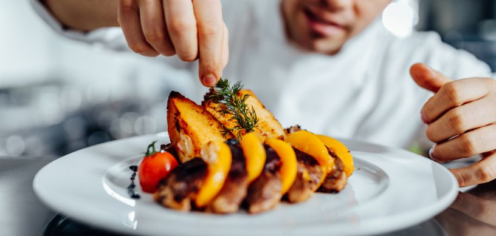

France stands out as the world's premier destination for getting the best-in-class fine dining experience with its exquisite culinary offerings. Its reputation as a culinary powerhouse draws visitors seeking the finest in gastronomy from around the globe.
The chefs in France have elevated food and cuisine into an art form, inspiring the rest of the world to take note and follow. As such, studying culinary arts in France is the greatest possible decision for anyone who wishes to pursue a career in this field.
Why Study Culinary Arts in France?
- Culinary Heritage: France is a country with a culture that takes the art of cooking very seriously and are known for their exquisite dishes and centuries old gastronomic traditions.
- Innovative Techniques: French chefs are pioneers when it comes to inventing new ways to cook and excite the palate of the finest food tasters in the world.
- Top Culinary Schools: The country has some of the world's best culinary schools, offering rigorous training from the best-of-the-best chefs and culinary artists in the world.
- Michelin-starred Restaurants: With 639 Michelin-starred restaurants in the country, there is no better to place to indulge in the culture of providing the finest of fine dining experiences in the world.
- Career Opportunities: Graduates are primed for a successful career in the global hospitality and culinary industries, thanks to the prestige associated with French culinary training.
Top Universities in France to Pursue Culinary Arts
When it comes to studying the art of cooking, no other country provides the plethora of options for the same as France. Here are some of the top universities in France to study the culinary arts.
- Le Cordon Bleu Paris
- Ferrandi Paris
- Institut Paul Bocuse
- École Grégoire-Ferrandi
- Gastronomicom
- Ferrandi Bordeaux
- Lenôtre School
- La Rochelle Tourism & Hospitality School
- Centre de Formation d'Alain Ducasse
- École de Cuisine Alain Ducasse
What’s the Cost of Pursuing Culinary Arts in the France?
The cost of pursuing culinary arts in France can vary widely depending on the institution and program chosen. Generally, tuition fees for international students range from EUR 5,000 to EUR 30,000 per year for undergraduate programs, and can be higher for prestigious schools like Le Cordon Bleu. Additional expenses such as accommodation, food, and supplies also need to be considered which will be roughly the same amount per year as the tuition.
Eligibility Criteria to Pursue Culinary Arts in the France
- Language Proficiency: You don’t need to learn French as most universities now have classes taught entirely in English to cater to international students. Universities will still require proficiency in English which can be proved by taking tests like IELTS and TOEFL.
- Documents: Typical documents include completed application forms, transcripts of previous education, letters of recommendation, a resume or curriculum vitae (CV), and a statement of purpose (SOP) outlining career goals and motivations for pursuing culinary arts in France.
- Work Experience: While not always mandatory, some programs may prefer applicants with relevant work experience in the culinary industry or hospitality sector.
- Visa Requirements: International students must also meet visa requirements, which may include proof of financial means to support themselves during their studies, a valid passport and a statement of purpose(SOP) explaining your intentions and motivations for studying in France.
Job Opportunities After Completing Culinary Arts in France
- Head Chef: Head chef in a restaurant or hotel kitchen is responsible for food preparation, and kitchen management. The head chef is held responsible for the reputation of the restaurants in terms of the quality of food and overall experience.
- Sous Chef: Assists the head chef in managing the kitchen i.e., the second in charge, supervising staff, and ensuring food quality and consistency.
- Pastry Chef: Specializes in pastry and dessert preparation often in restaurants, bakeries, or hotels.
- Baker: Focuses on bread and pastry production, either in bakeries, patisseries, or as part of a larger kitchen team.
- Food and Beverage Manager: Oversees the operations of restaurants or hotel dining facilities, managing staff, budgets, and customer service.
- Catering Manager: They manage the catering services for events, overseeing menu planning, food preparation, and logistics.
- Restaurant Manager: Handles day-to-day operations of a restaurant, including staff management, customer service, and financial oversight.
- Food Stylist: Works with photographers, advertisers, or media companies to style food for photographs, commercials, or film.
FAQs:
-
What is the best university to study culinary arts in France?
Le Cordon Bleu is most prestigious culinary institution in France. However France being the culinary capital of fine dining has plenty of other institutes that teach the art of cuisine better than any other institute anywhere in the world.
-
Is it expensive to study culinary arts in France?
France offers a wide range of options if you wish to study something in the culinary field. So, no, it is not expensive to study the culinary arts especially if you choose to pursue short courses and diplomas along with apprenticeship at a local bakery or restaurant.
For further assistance or queries students can contact us, Edwise International and avail our wide range of services for students on destinations like UK, USA, Canada, Australia, New Zealand, Singapore, Ireland and many other countries